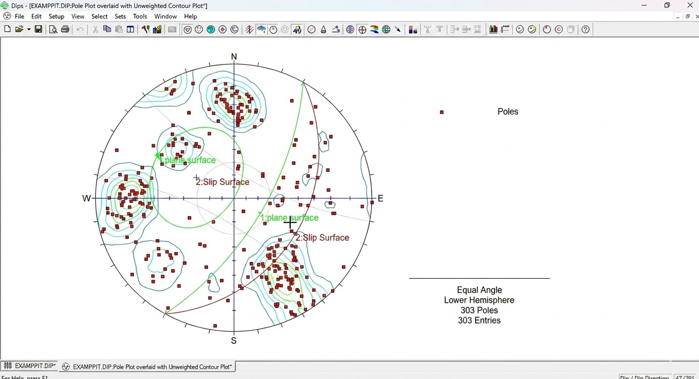
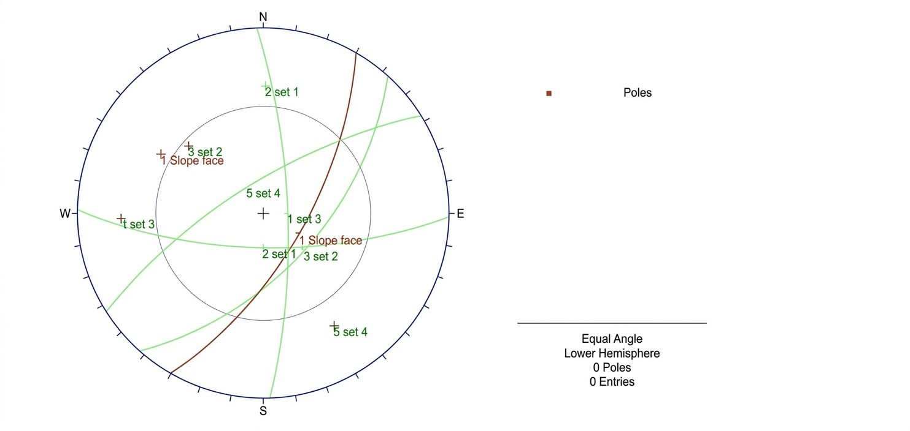
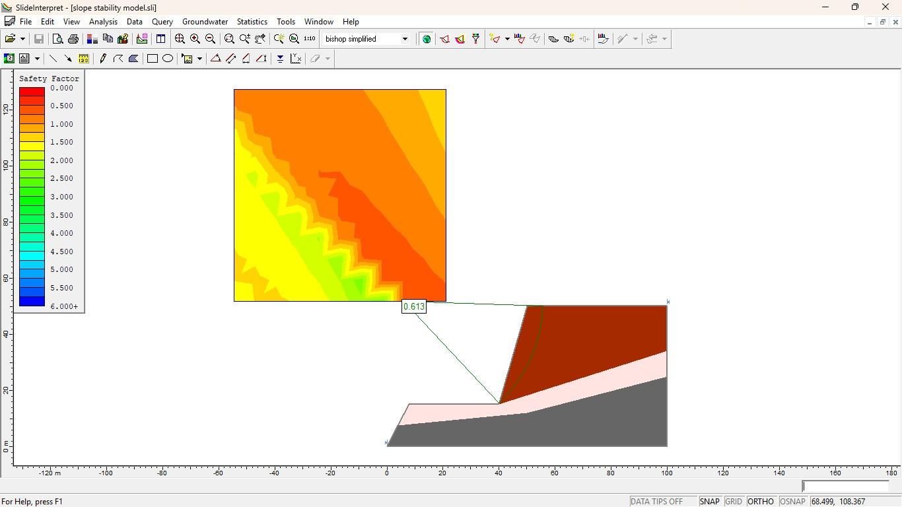
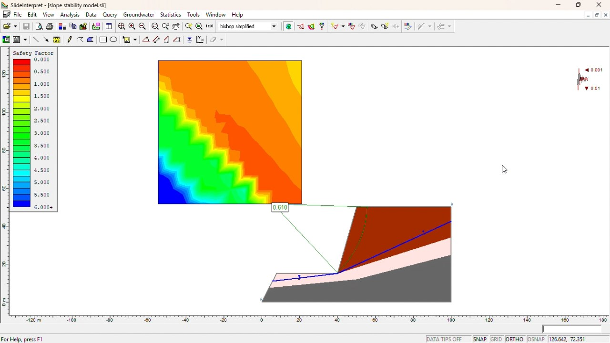
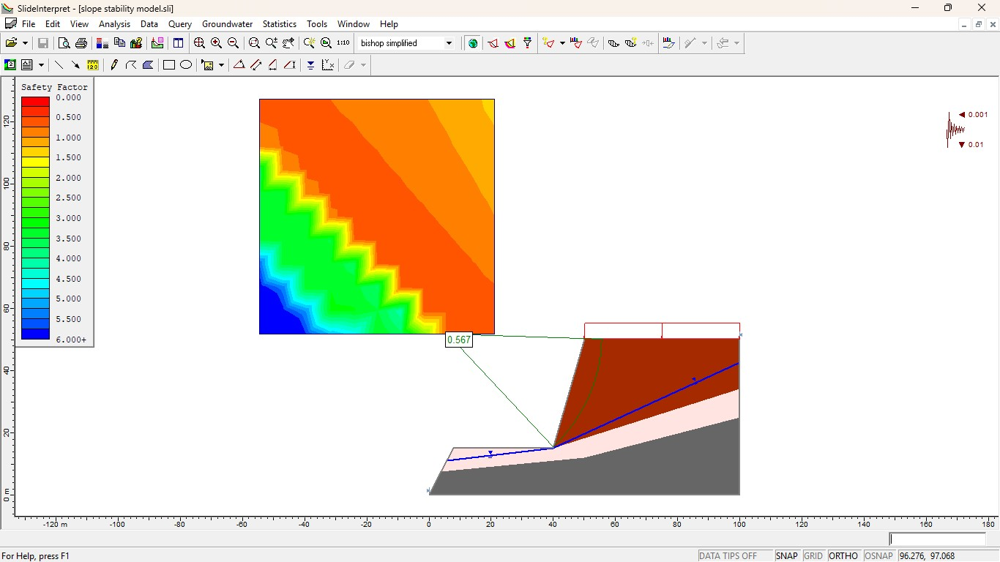

Site Investigations for Tailings Storage Facilities
Engineering considerations involved in investigating and characterizing sites for tailings storage facilities.
Project Duration
Software
Workflow
Deliverables
This engineering portfolio project presents practical and academic work related to rock slopes in civil and mining engineering. The project brings together site investigation concepts, tailings storage facility engineering, open-pit slope stability, kinematic analysis using Rocscience DIPS, and slope stability analysis using Rocscience Slide.
Technical presentations covering investigation, design, construction, monitoring and foundation considerations for tailings storage facilities.
Engineering considerations involved in investigating and characterizing sites for tailings storage facilities.
Technical study of engineering principles and considerations for tailings storage facility design.
Presentation covering construction considerations and engineering practices for tailings dams.
Technical overview of monitoring requirements and engineering observations for tailings dams.
Engineering considerations for foundations constructed on rock in tailings and civil engineering applications.
Engineering studies related to water risks and slope failure mechanisms in open-pit mining environments.
Study of mine water risks and their relationship with open-pit slope stability.
Technical presentation examining common mechanisms responsible for slope failure.
Practical modelling workflows using Rocscience DIPS and Slide for slope stability assessment.
Initial setup and preparation of the DIPS slope stability analysis workflow.
Kinematic analysis of potential planar sliding conditions.
Kinematic analysis of potential wedge sliding conditions.

DIPS analysis illustrating planar failure conditions.

DIPS analysis illustrating wedge failure conditions.
Slope stability modelling workflow using Rocscience Slide.

Slope stability result illustrating the calculated factor of safety.
Analysis illustrating the influence of groundwater conditions on slope stability.

Analysis illustrating the influence of seismic loading on slope stability.

Analysis illustrating the influence of surface loading on slope stability.
Selected technical references and software training materials provided for further engineering study.
Technical reference material covering practical principles of rock engineering and slope stability.
Tutorial reference for slope stability modelling using Rocscience Slide.
{kind=link}
{kind=link}
{kind=link}
{kind=link}
{kind=link}
{kind=link}